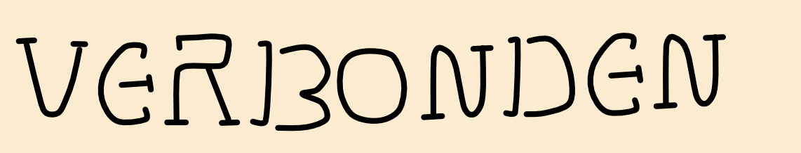
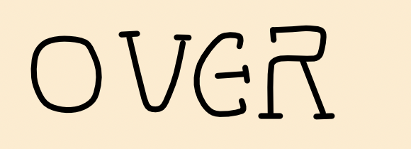
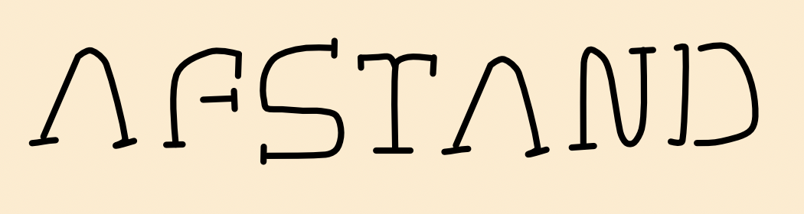
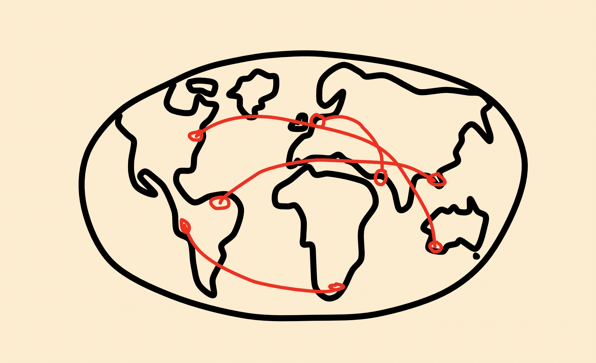
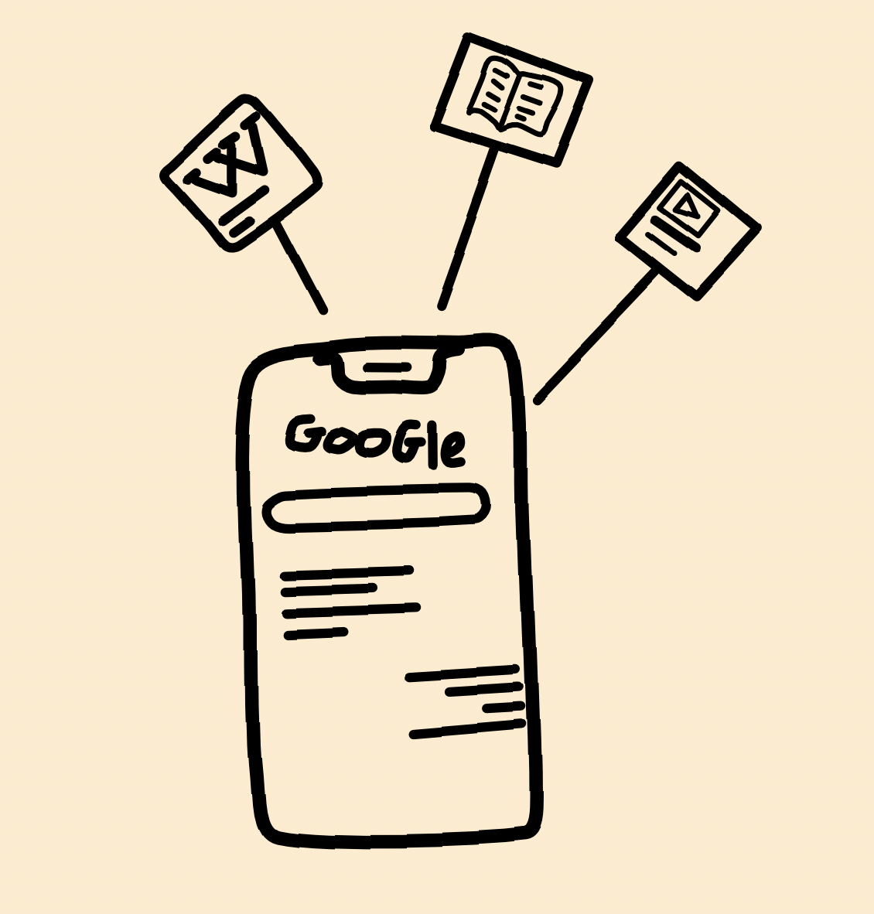

Dag oma,
Ik denk dat wij allebei een hele andere kijk op het internet hebben. We zijn natuurlijk in een heel ander
tijdperk opgegroeid. Jij een tijd daarvoor en ik er middenin. Dat heeft ons beide een hele andere ervaring
hierin gegeven en hoogstwaarschijnlijk ook een hele andere mening. Wat jij erover denkt kan ik helaas niet
meer
aan je vragen, maar ik wil in ieder geval mijn mening over het web met jou delen. Ik vind dat het internet
veel
goede maar ook slechte dingen met zich heeft meegenomen, maar de goede dingen overtreffen de slechte in mijn
mening zeker weten. Ik vind het prachtig hoe het web de wereld veel kleiner heeft gemaakt. Een heel goed
voorbeeld hiervoor is dat wij goed contact met elkaar hebben kunnen houden terwijl we duizenden kilometers
van
elkaar wonen. Door middel van tekstberichten of te videobellen met elkaar voelde het ineens bijna niet meer
alsof dat zo was. Dit heeft niet alleen onze relatie sterk gehouden, maar voor ontelbare families van over
de
hele wereld. Toen jij mijn leeftijd was, was dat natuurlijk nog helemaal niet zo. Ik zou me niet kunnen
voorstellen hoe dat zou zijn.

Nog iets wat ik geweldig aan het web vind is dat je eigenlijk de kennis van de
wereld in je broekzak hebt. Als je iets van kennis op wilt doen of iets willekeurigs wilt weten is dat
binnen
een paar seconden gebeurt met een paar klikken op je telefoon. In jouw tijd was dit heel anders. Je moest
dan
bijvoorbeeld naar een bibliotheek of aan anderen vragen met de hoop dat ze het wisten. Maar dit brengt ook
nadelen met zich mee. Ik denk dat mensen veel luier zijn geworden als het gaat om simpelweg dingen te weten.
Ik
denk dat het voor sommige mensen soms kan voelen alsof het soms nutteloos om kennis op te doen omdat
iedereen
het zo snel ook te weten kan komen via het internet. Hoe mooi het ook is dat iedereen toegang tot het web
heeft,
kan het ook valkuilen met zich meebrengen. Bijvoorbeeld het online zetten en verspreiden van nepnieuws. Veel
mensen, met name ouderen, gaan ervanuit dat alles wat op het internet staat gewoon klopt maar helaas is dat
al
lang niet meer zo. Al helemaal heeft de opkomst van ai dit heel erg veranderd. Nu kan niet alleen tekst je
misleiden, maar foto’s of video’s gemaakt met ai zijn nu ook bijna onmogelijk te onderscheiden van echt
beeld.
Ondanks de nadelen zou ik het internet voor geen goud meer willen missen, omdat het ons op zoveel manieren
dichter bij elkaar heeft gebracht. Ik hoop dat jij, waar je nu ook bent, trots zou zijn op hoe ver de wereld
en
de technologie inmiddels zijn gekomen.
Liefs, Ilay
